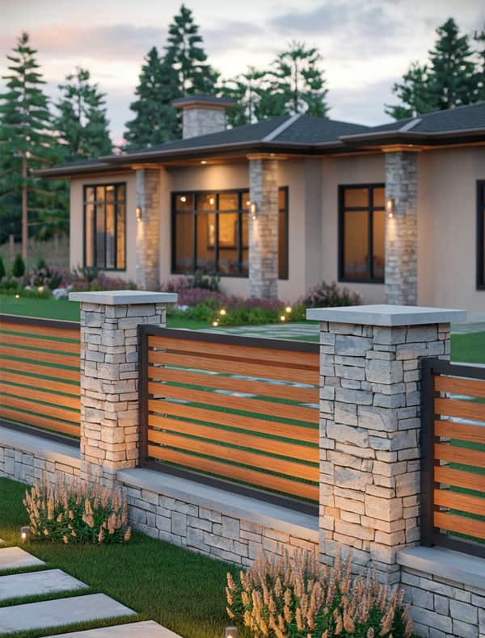
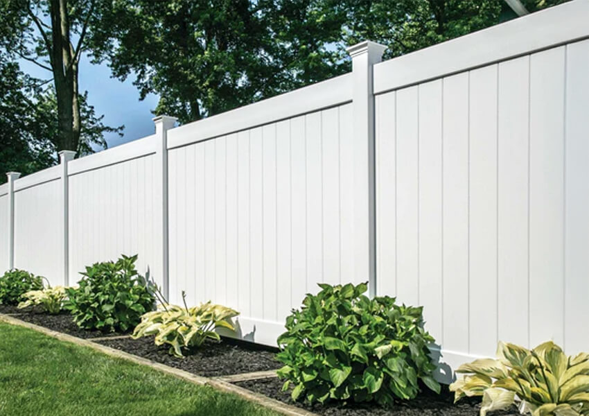
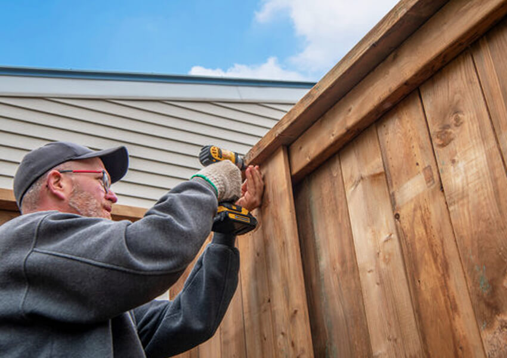
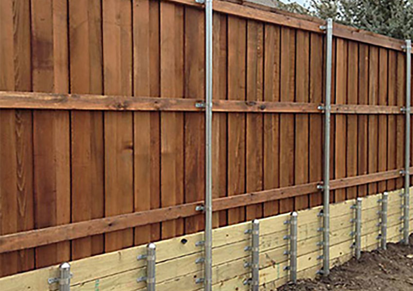
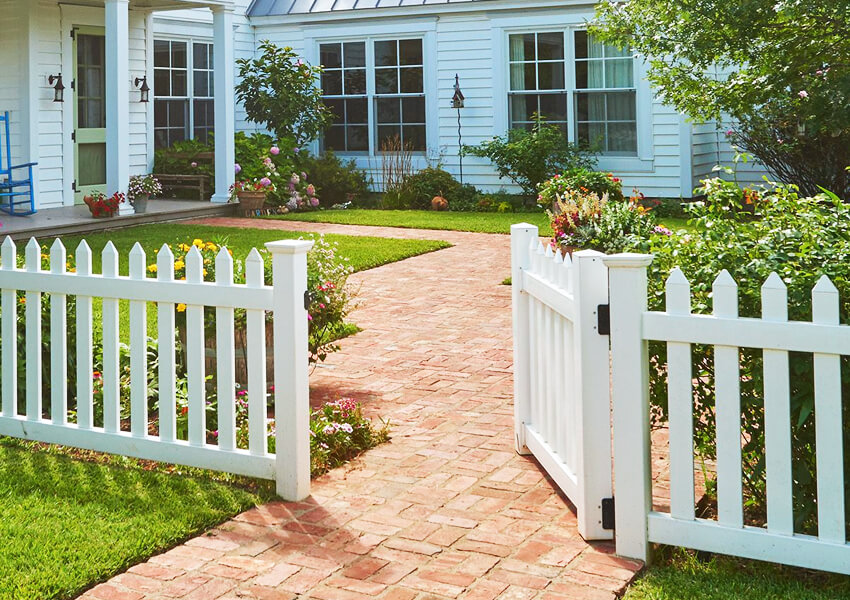
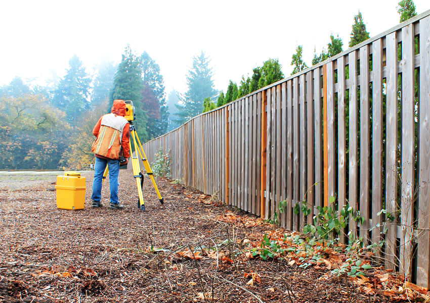
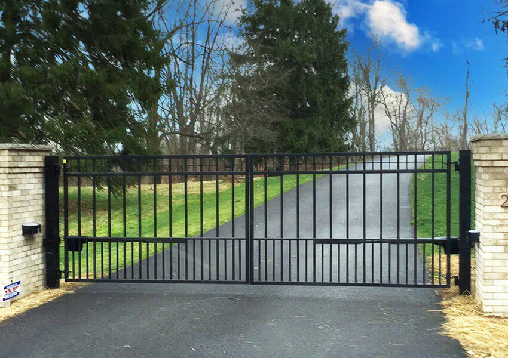

Find Local Fence Pros
Near You
Free quotes from trusted, pre-screened local fence installation & repair experts.

Fence Installation & Repair Services
Protect your property with a beautifully built, long-lasting fence:
- Available in most States
- Free, no-obligation local quotes
- Wood, vinyl & metal fence options
- Expert post-setting & structural installation
- Repair, reinforcement & replacement
- Full cleanup — straight, level, built to code
Receive quick, no-obligation quotes from local Pros
We connect you with trusted, pre-screened professionals ready to get the job done right!

Wood, Vinyl & Metal Fencing
New fence installation using your choice of material, style, and height.

Fence Repair & Restoration
Fix leaning, broken, or rotting sections and restore your fence to full strength.

Post Replacement & Reinforcement
Stabilise loose or damaged posts before they cause bigger structural problems.

Fence Painting & Staining
Protect and refresh your fence with professional-grade paint or stain.

Privacy & Decorative Upgrades
Enhance curb appeal and add privacy with custom panels, lattice, or inserts.

Gate Installation & Adjustment
Driveway and walkway gates installed, aligned, and fitted with hardware.
Find competitive quotes from reliable local fence pros you can count on.
Why hire a pro?
Skip the Stress —
Get It Built Right
While DIY might seem cheaper upfront, professional fence installation ensures the job is done safely and to code. Pros handle post-setting, alignment, and structural integrity — and leave your yard clean when they’re done.
- Expert material & height guidance
- Detailed, no-obligation estimates
- Level, square, built to code
- Stress-free scheduling
Everything You Need to Know
Start by identifying the scope of work. For installation, look for quotes that detail materials, labor, post setting, gates, and cleanup. Repair quotes should include replacement boards, fasteners, realignment, and any structural fixes. Make sure each quote includes the timeline, warranty coverage, and whether permits are needed.
Choose the right fence type for your needs. Wood offers classic appeal, vinyl requires less maintenance, and metal provides strength and visibility. Fence height, spacing, and layout affect both appearance and function. Repairs should address not just surface issues but also underlying problems like loose posts or foundation shifts.
A new or restored fence increases property value, improves safety, and makes your yard more enjoyable. If your current fence is sagging, missing sections, or showing signs of rot or rust, repairing or replacing it can prevent bigger problems. A clean coat of paint or stain improves curb appeal and extends the life of the material.
Small touch-ups or basic cleaning might be a good DIY task. But full installations, structural repairs, or painting large sections require the right tools and training. Professionals ensure that posts are level, materials are installed to last, and finishes are applied correctly. A contractor saves you time and delivers results that hold up over time.
The best contractors help you choose the right fence for your home, plan the layout, and take care of everything from digging post holes to applying the final coat of paint. They make sure your fence is straight, sturdy, and built to code. Whether you need a full installation or help restoring an older fence, working with experienced pros gives you peace of mind.